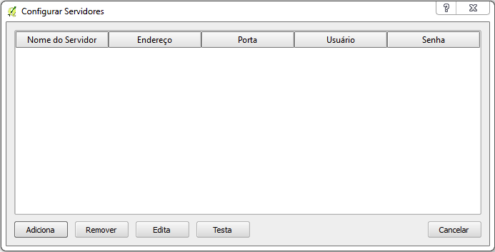
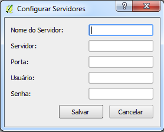
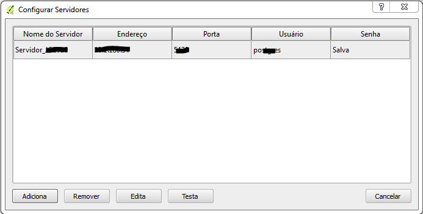

Aqui é possível ver um vídeo mostrando como realizar a configuração de servidores. Para maiores detalhes conceituais existem, abaixo do vídeo, os conceitos relacionados.
Para se iniciar o uso do plugin os servidores de banco de dados devem ser catalogados. Esse catálogo é feito no menu:
Ferramentas DSG – Catálogo de Servidores – Visualizar Servidor
A janela a seguir é onde são listados os servidores configurados. É possivel se adicionar uma nova conexão ( Adiciona ), remover ( Remover ), editar ( Edita ) e testar ( Testa )

A janela a seguir é aberta quando se clica em Adiciona ou Edita . Deve-se preencher um nome para a identificação do servidor (a critério do usuário), o endereço do servidor (endereço IP ou localhost em caso de servido local), a porta de acesso, além de usuário e senha de acesso.

Quando configurado, o servidor aparecerá na lista de servidores conforme a imagem a seguir. Após a configuração, é possível testar a conexão clicando-se em Testa .
